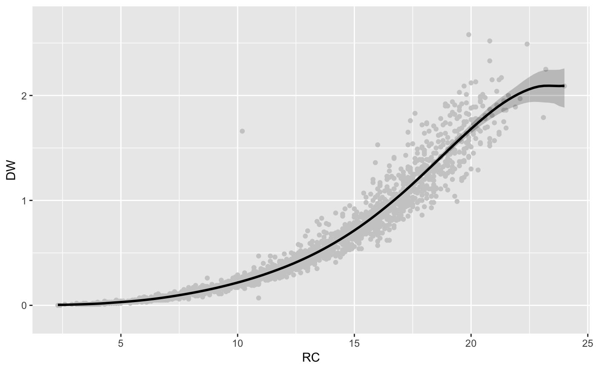
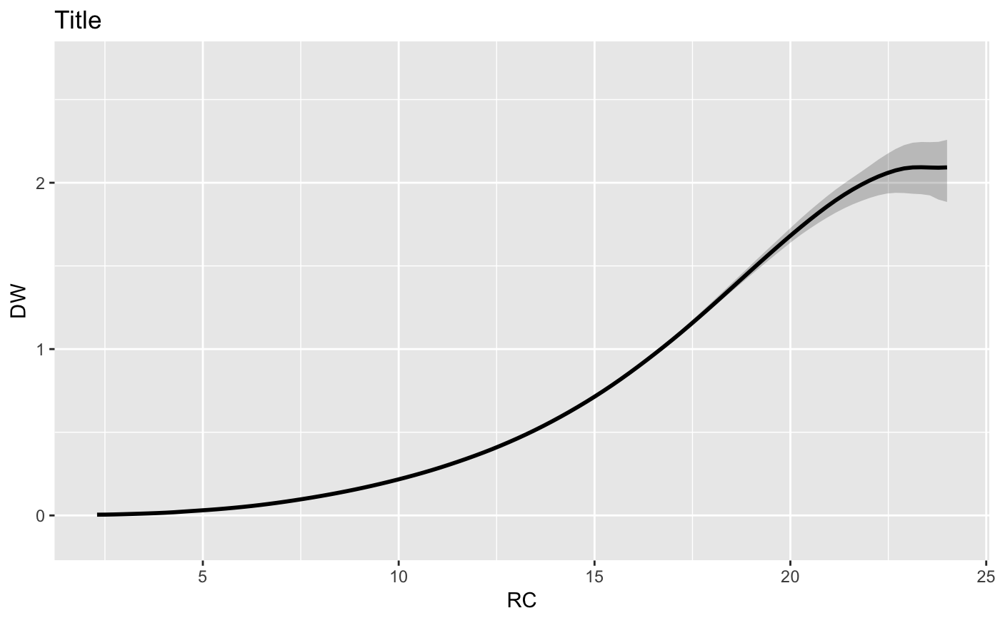
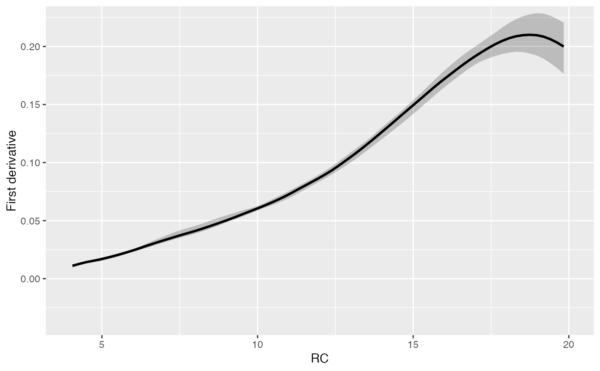
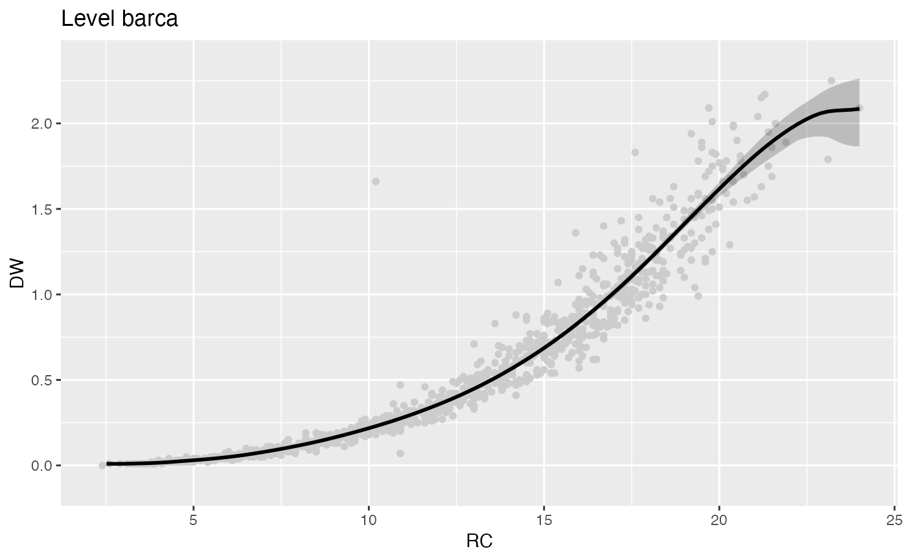
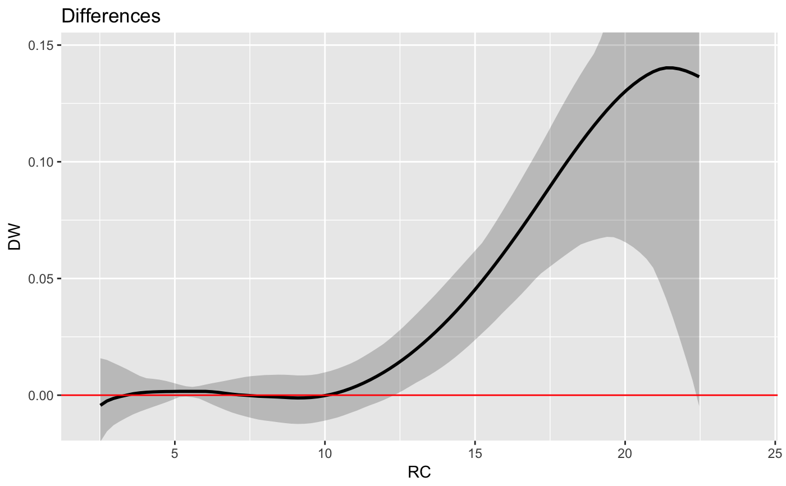

Visualization of frfast objects with ggplot2 graphics
Source: R/autoplot.frfast.R
autoplot.frfast.RdUseful for drawing the estimated regression function,
first and second derivative (for each factor's level) using ggplot2 graphics.
Additionally, with the
diffwith argument it is possible to draw the differences between
two factor's levels.
Usage
# S3 method for frfast
autoplot(
object = model,
fac = NULL,
der = 0,
diffwith = NULL,
points = TRUE,
xlab = model$name[2],
ylab = model$name[1],
ylim = NULL,
main = NULL,
col = "black",
CIcol = "black",
CIlinecol = "transparent",
pcol = "grey80",
abline = TRUE,
ablinecol = "red",
lty = 1,
CIlty = 2,
lwd = 1,
CIlwd = 1,
cex = 1.4,
alpha = 0.2,
...
)Arguments
- object
frfastobject.- fac
Factor's level to be taken into account in the plot. By default is
NULL.- der
Number which determines any inference process. By default
deris0. If this term is0, the plot shows the initial estimate. If it is1or2, it is designed for the first or second derivative, respectively.- diffwith
Factor's level used for drawing the differences respect to the level specified in the
facargument. By default,NULL. The differences are computed for the r-th derivative specified in thederargument.- points
Draw the original data into the plot. By default it is
TRUE.- xlab
A title for the
xaxis.- ylab
A title for the
yaxis.- ylim
The
ylimits of the plot.- main
An overall title for the plot.
- col
A specification for the default plotting color.
- CIcol
A specification for the default confidence intervals plotting color (for the fill).
- CIlinecol
A specification for the default confidence intervals plotting color (for the edge).
- pcol
A specification for the points color.
- abline
Draw an horizontal line into the plot of the second derivative of the model.
- ablinecol
The color to be used for
abline.- lty
The line type. Line types can either be specified as an integer (0 = blank, 1 = solid (default), 2 = dashed, 3 = dotted, 4 = dotdash, 5 = longdash, 6 = twodash). See details in
par.- CIlty
The line type for confidence intervals. Line types can either be specified as an integer (0 = blank, 1 = solid (default), 2 = dashed, 3 = dotted, 4 = dotdash, 5 = longdash, 6 = twodash).
- lwd
The line width, a positive number, defaulting to 1. See details in
par.- CIlwd
The line width for confidence intervals, a positive number, defaulting to 1.
- cex
A numerical value giving the amount by which plotting symbols should be magnified relative to the default. See details in
par.- alpha
Alpha transparency for overlapping elements expressed as a fraction between 0 (complete transparency) and 1 (complete opacity).
- ...
Other options.
Examples
library(npregfast)
library(ggplot2)
data(barnacle)
# Nonparametric regression without interactions
fit <- frfast(DW ~ RC, data = barnacle, nboot = 50)
autoplot(fit)

autoplot(fit, points = FALSE) + ggtitle("Title")

autoplot(fit, der = 1) + xlim(4, 20)

#autoplot(fit, der = 1, col = "red", CIcol = "blue")
# Nonparametric regression with interactions
fit2 <- frfast(DW ~ RC : F, data = barnacle, nboot = 50)
autoplot(fit2, fac = "barca")

# autoplot(fit2, der = 1, fac = "lens")
# Visualization of the differences between two factor's levels
autoplot(fit2, fac = "barca", diffwith = "lens")

# autoplot(fit2, der = 1, fac = "barca", diffwith = "lens")
#Plotting in the same graphics device
if (FALSE) {
if (requireNamespace("gridExtra", quietly = TRUE)) {
# For plotting two derivatives in the same graphic windows
ders <- lapply(0:1, function(x) autoplot(fit, der = x))
gridExtra::grid.arrange(grobs = ders, ncol = 2, nrow = 1)
# For plotting two levels in the same graphic windows
facs <- lapply(c("barca", "lens"), function(x) autoplot(fit2, der = 0, fac = x))
gridExtra::grid.arrange(grobs = facs, ncol = 2, nrow = 1)
}
}